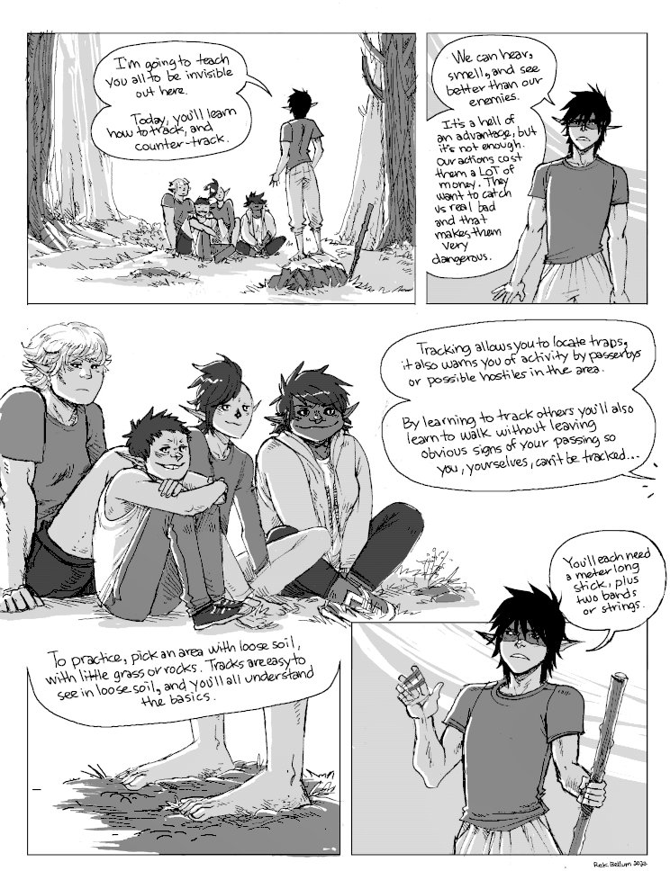
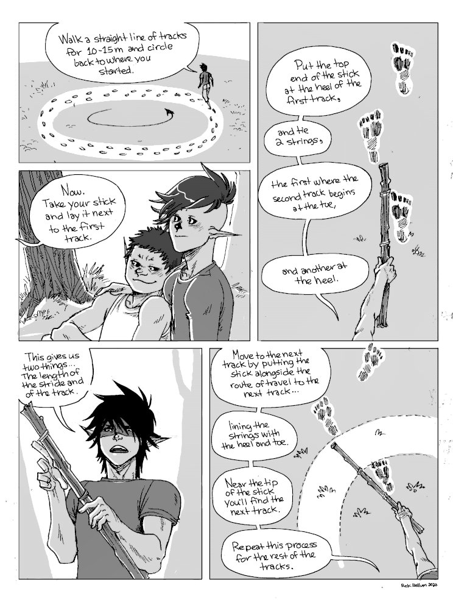
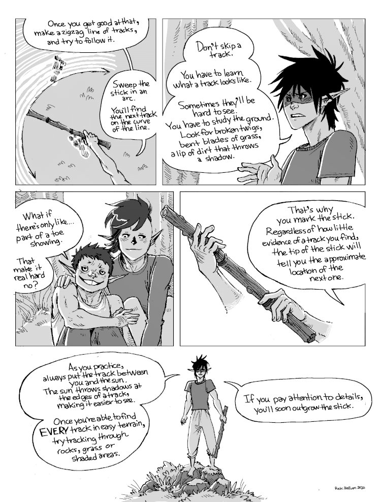
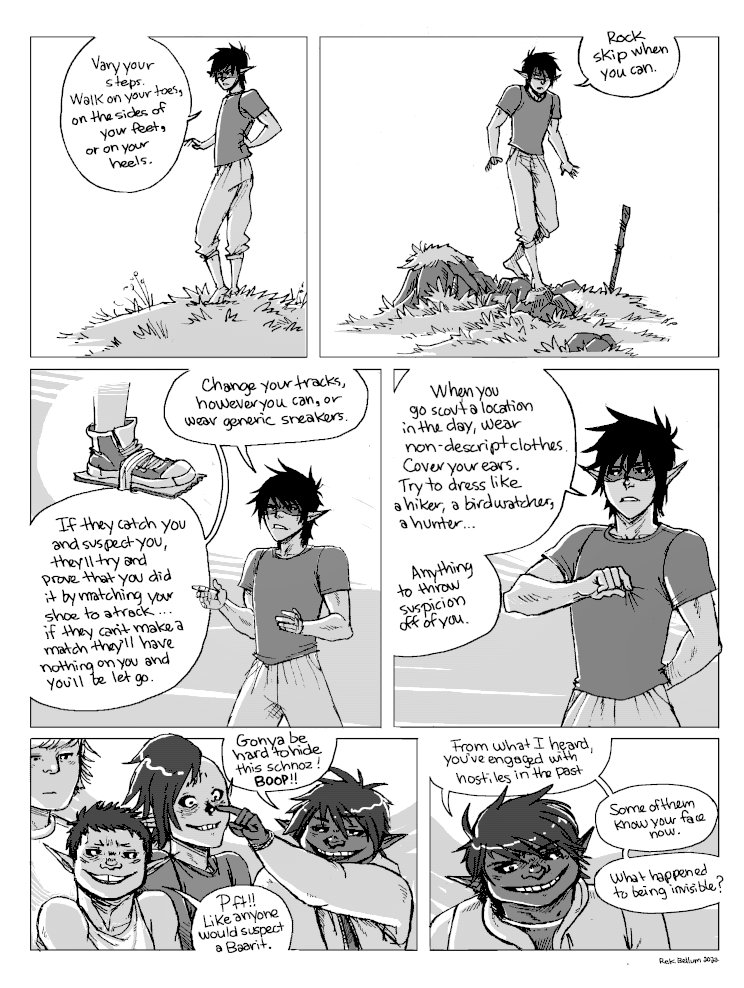
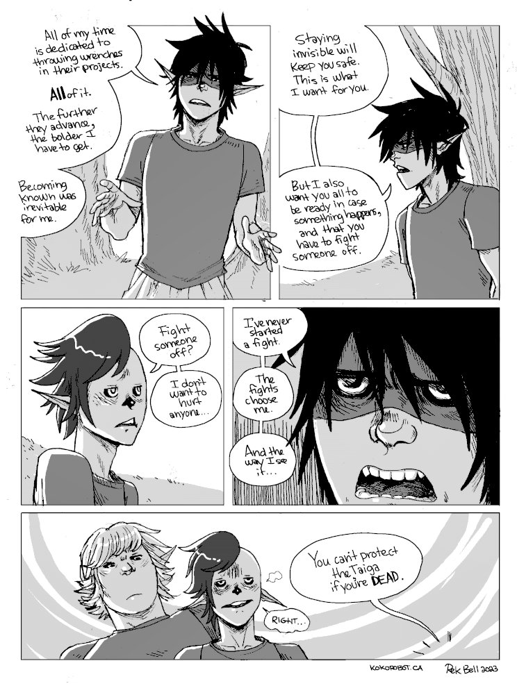
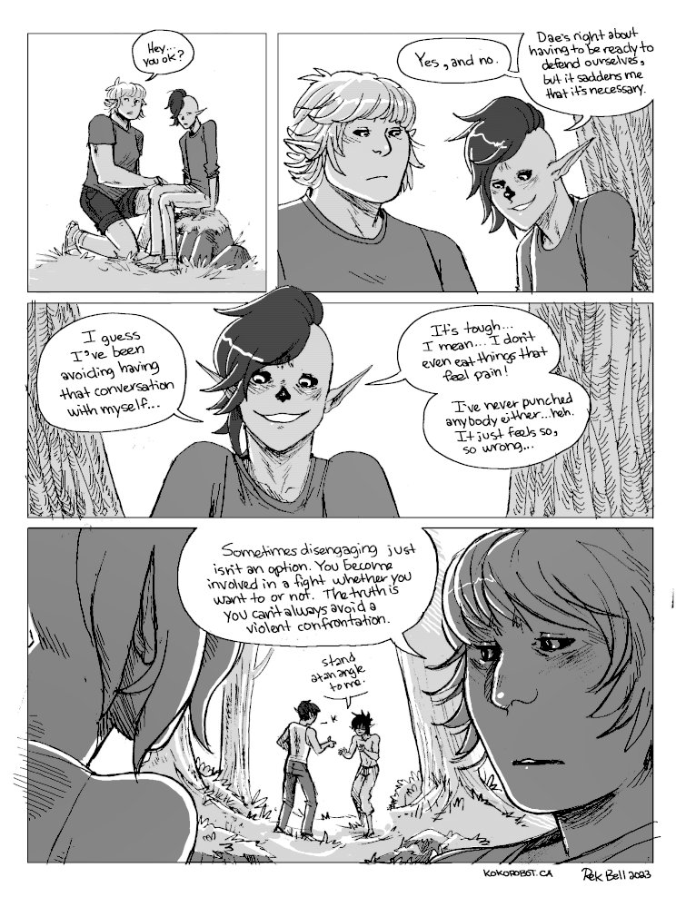

Tracking
Context. This sequence takes place in the past, in the early days of the Solo D's. The ToT (Terror of the Taiga) has recently revealed himself to the group, to give them a hand so that they can monkeywrench safely. In this sequence, he is teaching its current members how to track and counter-track.
I will add sequences that precede and follow this one soon.
     
See a related sequence, named the tot. This takes place way before everything, in the early days of the Solo D's.
Go back to the hakum main page.